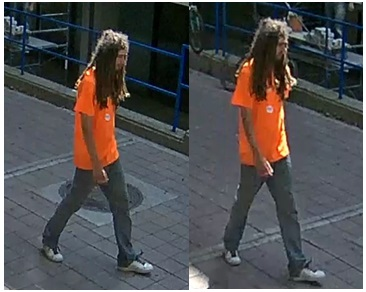

Incident Details:
On Friday 22 August, 2014 Ryerson University Security & Emergency Services were made aware of the following incident:
At approximately 3:00 PM community members were sitting outside Balzac’s Café when they were approached by the subject who was shouting. The community members, who did not know the subject, attempted to calm the subject down to no avail. The subject then hit one of the community members at the back of his head with an open hand. The other community members stood up and pushed the subject away and directed him to leave. The subject left and was last seen heading South on Bond Street towards Dundas Street.
The community members were not injured and did not want Toronto Police Services involved.
If you have any information about this incident or have been the victim of a similar incident, please call Ryerson University Security & Emergency Services at 416-979-5040 or via email at security@ryerson.ca. For any incidents in progress use the Emergency "80" number from internal phones. Ryerson University Security & Emergency Services offers 24 hour Walk Safe escorts and free self-defense courses; please check our website for more information at http://www.ryerson.ca/irm/security/index.html.
Resources on Campus
Suspect information:
Male
Light Complexion
6’ 0” / 1m 83 cm tall
Thin build
Approximately 30-45 years of age
Brown beard and long dreadlocks
Wearing an orange t-shirt, grey pants and white running shoes

Notification Information:
If you are a witness to a crime, please call Ryerson Security at 416-979-5040, or Toronto Police Services through Crime Stoppers at 416-222-TIPS (8477).
For Emergencies dial "80" (internal phones only).
To see all Security Incidents, please visit our web site at www.ryerson.ca/security.
EE-31-14